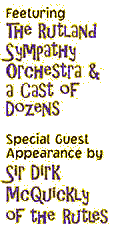

Eric Idle sings exploits Monty Python to tour the US this summer!
Tickets go on sale via the internet now through February!!
(Chicago, December 16, 1999) - Eric Idle is getting back together again to take himself back on the road for the very first time. This year he will tour his new hit stage spectacular, Eric Idle Exploits Monty Python-a rather stupid evening of skits and songs in cities across the United States. Also on stage with Idle will be the Rutland Sympathy Orchestra under the baton of John Du Prez, Sir Dirk McQuickly of the semi-legendary Rutles, The Bruces (an all-Australian Drinking Quartet) and Dolly Taylor, the great transvestite Country and Western singer.
Described as a "Sillypalooza," and "a sort of Liverdance for the new millennium," the two-hour event-of-the-season will contain old favorites, bits of previously unseen Python footage, lumberjacks, sheep and a surprise guest appearance by the Spanish Inquisition. Each evening Idle will search the audience for the most creatively and crazily dressed Python fan and invite them to join him on stage in his new favorite game, "Spot the Looney." The entire show is loosely based on Idle's sell-out Concert at The Getty Museum last year, which set Western Civilization back $120, the show is billed as "not suitable for anyone."

There has been no "live" Python on the US stage since 1981 at the Hollywood Bowl. Although rumors of a Python reunion have been rife since 1431, this is the first definite appearance of a pythonic stage show and is eagerly awaited by twelve fans and a goat.
The Tour will commence May 1, 2000, and continue through June and July. The tour is scheduled to make stops in: Phoenix, San Diego, Los Angeles, Portland, Vancouver, Seattle, San Francisco, Denver, Chicago, Minneapolis, Philadelphia, Washington D.C., Boston, Columbus, Milwaukee, Toronto, and Detroit. It will also include a night at Carnegie Hall, New York, in June. As tour dates are confirmed, tickets will be made available for purchase via the PYTHONLINE site. Look for the "HELP! I'm being exploited by Eric Idle" banner and click there for details!
The tour is being produced by Jam Theatricals, a Chicago-based entertainment company that has been around for quite a long while and has presented some really fun gigs all over the country.
You have been warned. Say no more.